Раскладка текущей игры, металл и эмаль FS
Desktop: прежний шестиугольник банка, прямо под ним прежний закруглённый блок FREE SPINS LEFT. Одна вертикальная ось. На телефоне — прежние верхние углы, бумажные флажки между ними. Гравировка взята с рейки исходной рамки; золото, бирюзовая эмаль и крупные золотые цифры.
Измерение текущего интерфейса загружается.
Состояния UI · ×3, ×10, +5 → 14 FS
Слева — настоящий текущий ×3 / 9 FS (seed 38). Справа ×10 и 14 FS — отдельные исследования UI. В полном сравнении обе стороны всегда TOTAL WIN 3.00, ×3 / 9 FS.
Новый материал · то же место и размер
Для проверки используйте 390×844 и кнопку 1:1. Могилы desktop размещены ниже блока, без пересечений.
Растровый исходник · 9-slice
Исходник phase2b-frame возвращён без перерисовки и удаления узора. Широкие тёмные рейки сохраняют лиственную гравировку, четыре кремовых угла, заклёпки и две центральные розетки. Верхняя и нижняя рейки дополнительно разделены вокруг розеток: они не растягиваются вдоль.

Лиственная гравировка не является диагональной штриховкой. Отдельной сетки штриховки при осмотре не выявлено; ничего не удалялось. Фрагменты открыты ниже.
Исходник
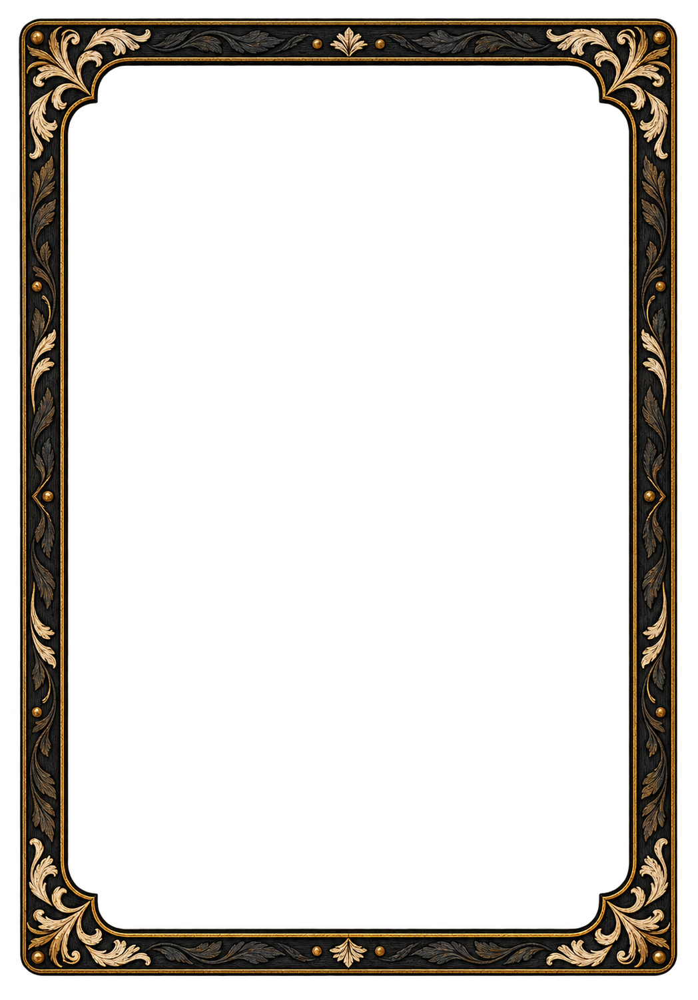
Сборка в выбранном размере
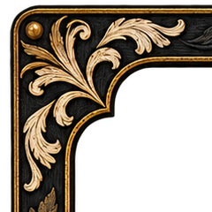
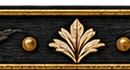
Отдельная композиция 390×844
В нижней полосе базы видны свечи, маригольды и сахарный череп. Ночью — низкие надгробия и свечи. Предметы по краям оставляют центр под WIN свободным; кнопки начинаются ниже предметного слоя. Дальний план имеет собственный кроп, предметный слой собран отдельно.
1d · предметов в нижней полосе нет
1e · читаемые предметы
Группы: x=3…91 и 299…387, y=647…721. Доска заканчивается y=639. Центр x=110…280, y=642…690 и кнопки от y=723 свободны.
Офренда B · тёплый отсвет и мягкие края
Свет свечей ложится на камень ниши, колонны и пол вокруг основания. Края предметного слоя смягчены, контактная тень находится под основанием. Портреты и боковое расположение неподвижных свечей сохранены.
1d · прежняя сборка B
1e · свет связывает слои
Измерение яркости загружается.
Раздельные слои
Stake · та же иллюстрация
3:4
9:16
Бумажные флажки · отдельные спрайты
Те же фуксия, оранжевый и бирюза. Бумажные волокна, боковой свет и лёгкая гравировка соответствуют фону. Глазницы и нос соединены бумажными перемычками. Каждый флажок — отдельный прозрачный PNG, без сдвинутой копии.
1d · плоская заливка
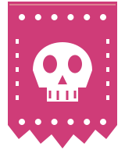
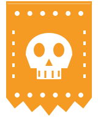
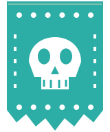
1e · бумага и свет, 80×96
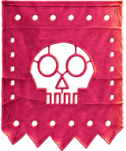
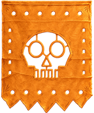
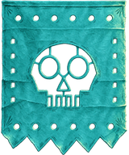
Мобильный размер · 32×38.4
Демо движения в полном кадре ниже. Reduced motion выключает движение; mobile-lite оставляет два лепестка и выключает параллакс.
Отбракованный первый флажок
Глазницы и нос висели отдельными островками. В выбранном спрайте добавлены бумажные перемычки.
Дефектный черновик · Исправленный источникЖнец B · нижняя кисть держит древко
Пальцы согнуты вокруг древка, большой палец замыкает хват с другой стороны. Генеративная правка перенесена только в область нижней кисти с мягким краем; остальная B-иллюстрация не изменилась. В FS три настоящих джокера на полной яркости с тонкой золотой кромкой, остальные проигравшие карты на 62%.
B · прежняя кисть
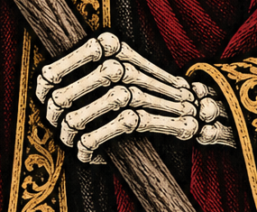
B · исправленный хват
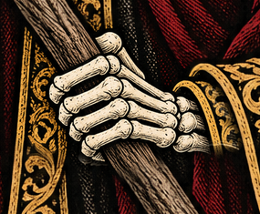
86×121 и 60×85 · Queen A рядом
Отмеченные места: плотная гравировка у основания крайнего пальца; зубы на 60×85 сходятся в светлую полосу. Это видно в конечном размере и кропе. Дополнительных глаз, пальцев, сломанной косы или псевдотекста при осмотре не выявлено.
Полный исправленный B · Исходник сгенерированной кисти · Область правки и проверка остального изображения


Подписи рук · мягкая тёмная подложка
За названием, просветом и суммой добавлена размытая тёмная тень с плавным краем. Жёсткой плашки нет. Координаты, строки, размеры шрифта, промежутки и порядок двух рук сохранены.
1d · масть просвечивает
1e · мягкая тень
TWO PAIR 0.50 + 0.50 = WIN 1.00; THREE OF A KIND 2.25 + JACKS OR BETTER 0.75 = TOTAL WIN 3.00. Проверены промежутки между строками на 390×844.
Осмотр иллюстраций и генерации
Промпты и референсы · Проверки и измерения · Хэши после правок